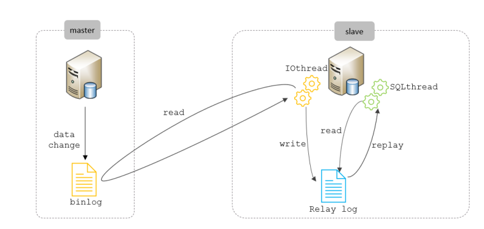

02主从复制
主库改了什么，从库跟着改一遍。这一页按课程顺序走完：两台机器 → 主库四步 → 从库五步 → 主库写、从库查。原理只讲三步，每一步都写清「应该看到什么」。
一屏速记合上笔记，这 4 条要能自己说出来
- 三个动作：主库把变更写进
binlog→ 从库取回来写成relay log→ 从库重放。管这三段的分别是 Dump 线程、receiver、applier。 - 两个配置：两边
server-id不同（8.0 默认都是 1），主库read-only=0、从库read-only=1。 - 一个起点：位点复制要「文件名 + 位置」。主库已有数据时，必须用快照里的坐标启动，否则历史数据永远不过来，而且不报错。
- 一个验收：两个
Running都是Yes只说明管道通了；还要「主库写、从库查到」才算真的同步。
1. 是什么，有什么用
主库执行过的 DDL 和 DML，通过二进制日志传到从库，从库把同样的操作再执行一遍（也叫重做），两边数据就保持一致。一台主库可以同时挂多台从库；从库也能再当别人的主库，串成链式复制。
主库出问题，用追得上的从库顶上去。
查询分摊到从库，降低主库访问压力。
备份在从库上做，备份期间不影响主库服务。
请求得有人路由到从库，主库挂了得有人判断并改指向，误删会被原样复制过去——所以副本不能当备份。复制只负责把变更搬过去。
2. 原理：三步
核心只有二进制日志。三个动作对应三个线程，中间落在两个文件上：

- 主库把变更记录进 binlog
事务提交时，DDL 和 DML 记进二进制日志文件。查询语句不记。
- 从库连上主库，把 binlog 读回来写成 relay log
从库主动连主库（主库不会主动推），按给定的起点往后取事件，落到自己的中继日志。
- 从库重放 relay log
把中继日志里的事件重新执行一遍，改变本机数据。到这一步，数据才真正一致。
图里的 IOthread / SQLthread 是课件叫法；8.0 文档把它们改名为 receiver / applier，状态字段里也写作「I/O 线程」「SQL 线程」。名字换了，干的活没变。
| 角色 | 在哪台 | 干什么 |
|---|---|---|
| Binlog Dump | 主库 | 每个从库连接配一个。只有它读主库磁盘上的 binlog，按从库给的起点往后发。 |
| receiver | 从库 | 叫 I/O 线程。连主库、收事件、写 relay log，写完就返回。 |
| applier | 从库 | 叫 SQL 线程。读 relay log 应用变更；并行时由 coordinator 分给多个 worker。 |
receiver 可以一直领先，applier 跟不上时数据就压在 relay log 里。所以看状态永远是两条线：接收进度、应用进度。
3. 两台机器先准备好
两台机器、两个 IP，装同一个小版本的 8.0。角色先定死，后面所有命令都按这张表来：
| 角色 | IP | 开工前的状态 |
|---|---|---|
| 主库 master | 192.168.200.200 | 装好 MySQL 8.0，本机能 mysql -uroot -p 登录。 |
| 从库 slave | 192.168.200.201 | 同上。不要有要同步的同名库——已有数据的情况见 02-04。 |
复制走的是 3306 端口，先把这个口放开。能改防火墙就精确放行（推荐），图省事也可以直接关掉：
# 放行 3306（推荐，两台都执行）
firewall-cmd --zone=public \
--add-port=3306/tcp --permanent
firewall-cmd --reload
# 或者直接关掉防火墙（课程演示里这么干）
systemctl stop firewalld
systemctl disable firewalld在从库上手工连一次主库：mysql -h 192.168.200.200 -P 3306 -uroot -p -e "SELECT 1"。能出结果，说明网络、端口、监听地址这三类问题已经排掉了——比等到配完看见 Replica_IO_Running: No 再猜省事得多。
复制本身不依赖时钟，但日志里的事件时间戳来自主库，排查延迟和问题时两边差几个小时会看错。装完顺手 timedatectl set-timezone Asia/Shanghai，两台都设成同一个时区。
4. 主库：四步
下面命令用管理员账号执行，复制权限单独建一个账号给从库用。
- 改配置：钉住 server-id 和读写状态主库 · 配置文件 /etc/my.cnf
[mysqld] # 集群内唯一，取值 1 ~ 2^32-1 server-id = 1 # 0 = 可读写（主库的正常状态） read-only = 0 # 可选：只同步部分库时才放开 # binlog-do-db = db01课程里只改这两行，因为 8.0 默认已经开着 binlog（
log_bin=ON，文件在数据目录下、名字默认binlog）。要换目录或名字再加log-bin；想显式钉住格式加binlog-format=ROW（8.0 默认就是 ROW）。binlog-do-db只认「当前默认库」，跨库写会漏——不确定就别开，做全量复制。细节见 04 第 4 节。改完
grep -n "server-id\|read-only" /etc/my.cnf：确认只有一份，别在文件末尾又追加一段[mysqld]。同名配置后者覆盖前者，改了不生效多半是这个原因。 - 重启并核对主库 · Linux 终端
主库 · mysql 客户端systemctl restart mysqldSELECT @@server_id, @@log_bin, @@binlog_format, @@read_only;期望
1 / 1 / ROW / 0。这四个值在 8.0 里本来就是默认值——这一步的真正作用是把它们钉死，免得哪天被改过还不知道。值是旧的，说明改的不是服务真正读的那份配置文件；起不来先看systemctl status mysqld和错误日志。 - 建复制账号，并且先连一次主库 · mysql 客户端
CREATE USER 'itcast'@'%' IDENTIFIED BY 'Root@123456'; GRANT REPLICATION SLAVE ON *.* TO 'itcast'@'%';课程写的是
从库机器 · Linux 终端IDENTIFIED WITH mysql_native_password。8.0 还能这么写，但 8.4 起该插件默认不可用，所以这里用默认插件。'%'是图省事；知道从库 IP 就写死'itcast'@'192.168.200.201'。权限只给REPLICATION SLAVE，别顺手给ALL。mysql --host=192.168.200.200 --port=3306 \ --user=itcast --password -e "SELECT 1"能登录、有结果，说明账号、密码、来源地址、认证插件这四类问题已经排掉了。这一步故意放在启动复制之前。（如果按 02-02 给账号加了
REQUIRE SSL，连接时要补--ssl-mode=REQUIRED。） - 记下起点坐标主库 · mysql 客户端
SHOW MASTER STATUS;抄下
File和Position两列：File 是当前正在写的日志文件，Position 是下一条事件的位置。下一节要原样填进从库。返回空：
log_bin没开，回第 1 步。8.4 里这条改名SHOW BINARY LOG STATUS。这个坐标只包含它之后的变更。主库已经有业务数据的话，别用这里的值，走 02-04 的快照坐标。
5. 从库：五步
- 改配置：server-id 换成 2，设只读从库 · 配置文件 /etc/my.cnf
[mysqld] # 和主库必须不同 server-id = 2 # 1 = 只读 read-only = 1 # 可选：连管理员也挡在外面 # super_read_only = 1read-only挡的是普通账号的写，不挡 applier——重放照常进行，这两件事不冲突。super_read_only连有SUPER的管理员一起挡，同样不挡 applier。 - 重启并核对身份从库 · Linux 终端
从库 · mysql 客户端systemctl restart mysqldSELECT @@server_id, @@read_only, @@super_read_only, @@server_uuid;期望
2 / 1 / 0（开了super_read_only则最后是1）。两台server_uuid必须不同：直接拷数据目录会连auto.cnf一起拷过去，uuid 就重复了。 - 指向主库，说明从哪开始从库 · mysql 客户端
-- 下面五个值都换成你自己的 CHANGE REPLICATION SOURCE TO SOURCE_HOST = '192.168.200.200', SOURCE_PORT = 3306, SOURCE_USER = 'itcast', SOURCE_PASSWORD = 'Root@123456', SOURCE_LOG_FILE = 'binlog.000003', SOURCE_LOG_POS = 156;账号建在主库上，端口填主库的 3306。
SOURCE_LOG_FILE/SOURCE_LOG_POS就是上一节抄的那两个值，示例里的数字不是你的。8.0.23 起用
SOURCE_*，之前是MASTER_*（CHANGE MASTER TO ... MASTER_HOST），8.4 已删除。两套名字一一对应：8.0.23 之后 8.0.23 之前 含义 SOURCE_HOSTMASTER_HOST主库 IP SOURCE_USERMASTER_USER连主库的账号 SOURCE_PASSWORDMASTER_PASSWORD连主库的密码 SOURCE_LOG_FILEMASTER_LOG_FILEbinlog 文件名 SOURCE_LOG_POSMASTER_LOG_POSbinlog 位置 成功就是
Query OK, 0 rows affected。报语法错先看版本：8.0.23 之前不认识SOURCE_*。 - 启动复制从库 · mysql 客户端
START REPLICA;Query OK只说明线程起来了，成不成还得看下一步。8.0.22 之前叫START SLAVE；只想单独启重放线程用START REPLICA SQL_THREAD。 - 看状态：两个 Yes从库 · mysql 客户端
SHOW REPLICA STATUS\GReplica_IO_Running: Yes Replica_SQL_Running: Yes Last_IO_Error: Last_SQL_Error: Auto_Position: 0两个
Yes、两个错误字段为空、Auto_Position=0（位点复制的正常值）。Replica_IO_State显示Waiting for source to send event是正常的空闲态，不是卡住。这只是管道通了，数据对不对还看下一节。输出为空
Empty set：连错实例了，或者CHANGE REPLICATION SOURCE没执行成功。
6. 测试：主库写，从库查
按课程的数据来。在主库执行：
CREATE DATABASE db01;
USE db01;
CREATE TABLE tb_user(
id INT PRIMARY KEY AUTO_INCREMENT,
name VARCHAR(50) NOT NULL,
sex CHAR(1)
) ENGINE=InnoDB DEFAULT CHARSET=utf8mb4;
INSERT INTO tb_user(id,name,sex) VALUES
(NULL,'Tom','1'), (NULL,'Trigger','0'), (NULL,'Dawn','1');到从库查验：
SELECT * FROM db01.tb_user;能看到三行。再在主库改一次：UPDATE db01.tb_user SET name='Tom-2' WHERE id=1;，回从库重查应变成 Tom-2——新增和修改各验一次，只验 insert 会漏掉行变更的问题。
两个客户端窗口切来切去容易搞混，先确认自己连的是哪台：
SELECT @@server_id, @@hostname;server_id 是 1 就是主库、2 就是从库。查不到东西时先看这一行，比翻连接配置快。
最后在从库试一条写入，应当被只读挡住（通常是 1290）：
INSERT INTO db01.tb_user(id,name,sex) VALUES (99,'oops','1');报 ERROR 1290 ... --read-only option 才算只读生效。如果插进去了，先修只读，再查这条脏数据会不会被复制回主库。
7. 卡住了，先看这三处
在从库执行 SHOW REPLICA STATUS\G，按顺序看三个字段，多数问题当场就能定位：
| 看到什么 | 先查什么 |
|---|---|
Replica_IO_Running: No / Connecting | 读 Last_IO_Error。连接超时或拒绝查地址、端口、防火墙；1045 查账号来源与密码；SSL 报错查 TLS 配置。最快的办法是把第 4 节第 3 步的手工连接重跑一次。 |
Replica_SQL_Running: No | 读 Last_SQL_Error。1062 多为重复键、1032 多为找不到行——先查从库是不是被误写、初始数据是不是缺了，别直接跳过事务。 |
两个 Yes，但查不到新数据 | 确认事务已提交、连的是从库、在新事务里重查；再看是不是主库已有历史数据没导（见 02-04）。别拿 Seconds_Behind_Source=0 当追平证据。 |
日志已被清理、报 1236、uuid 相同、疑似延迟——这些按链路往下查的完整表格在 02-04。
扩展页
本页只保证「搭通并验证」。下面四块是搭通之后会遇到的：
自测三问先自己答，再展开对照
Q1主库已有 3 万条数据，直接 SHOW MASTER STATUS 拿坐标就 START REPLICA，会怎样？
通道是通的，之后的新写入也能过去，但那 3 万条历史数据永远不会出现，而且不报错。
要用 mysqldump --single-transaction --source-data=2 拿一份带坐标的快照，导入从库后用快照里的坐标启动。见 02-04。
Q2从库 server-id 忘了改，还是默认的 1，会报什么错？
多数情况不报错，但数据不同步——从库会丢弃 server_id 与自己相同的事件，相当于收到就扔。这类问题最难查，因为它安静。
所以从库第一步就把 server-id 定成 2，并用 SELECT @@server_id 核对。
Q3两个 Running 都是 Yes、延迟显示 0，业务在从库却读到旧值。先查什么？
先别信延迟。比 Read_Source_Log_Pos 和 Exec_Source_Log_Pos：两个 Yes 只说明线程活着，applier 可能还在追。
再看读的是不是从库（SELECT @@server_id）、是不是在旧事务快照里读；最后才怀疑复制过滤和初始数据缺口。
资料
官方文档：搭建复制 · 复制实现 · 复制线程 · SHOW REPLICA STATUS
核对日期 2026-11-27。本页顺序按课程「概述 → 原理 → 准备服务器 → 主库配置 → 从库配置 → 测试」编排；命令按 MySQL 8.0 官方文档与课程内容整理，没有在两台真实实例上逐条执行，在自己环境里第一次跑时以每步的验收输出为准。